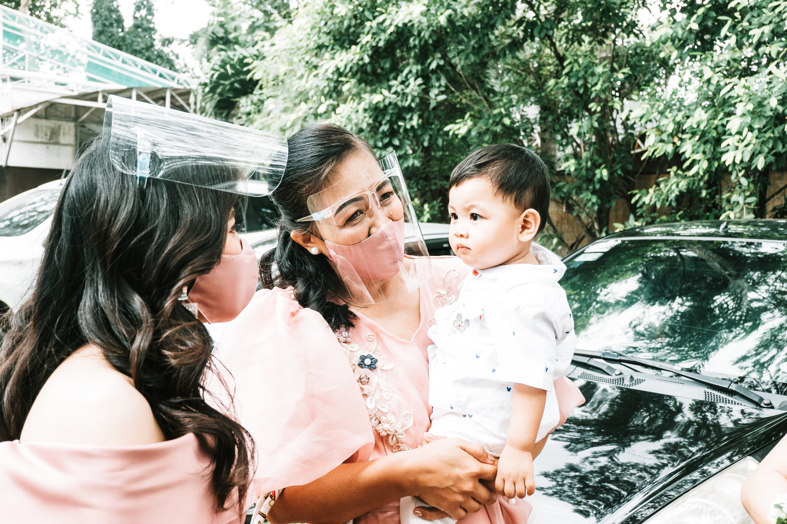
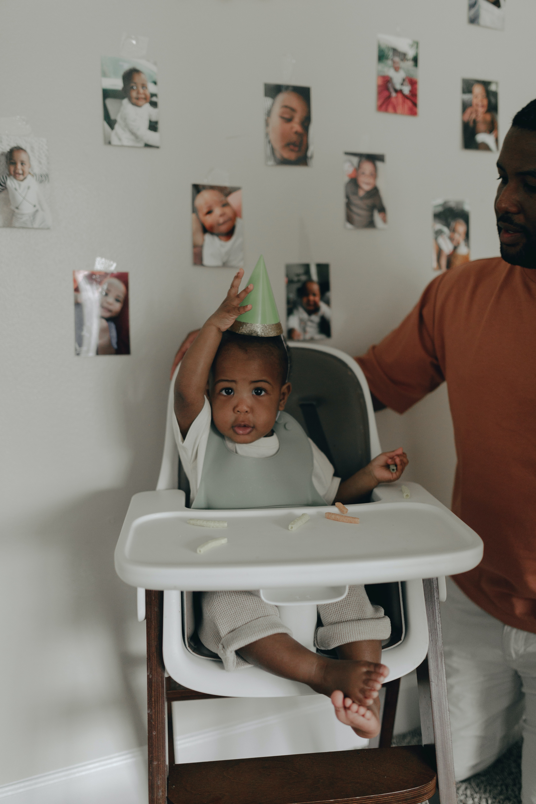

Paving the future of developmental research with awake infant fMRI
Paving the future of developmental research with awake infant fMRI
Over the last century, enormous progress has been made in understanding early cognition. Yet the true richness of the infant mind may be difficult to uncover given the constraints of their behavioral repertoire – an inability to speak, understand instructions, execute complex actions, etc. Thus, neuroimaging methods such as EEG, MEG, and fNIRS have been increasingly used to complement behavioral studies of infants’ mental states. However, fMRI (the “gold-standard” in adult cognitive neuroscience) has been notoriously underexplored. In my research, I have helped fill this gap by assisting in the development and validation of methods to collect high quality and quantity data from awake infants performing task-based fMRI. I have published on how fMRI’s high spatial resolution and access to deep brain structures has the potential to reveal infants’ internal representations that may not otherwise be accessible, and to disentangle multiple mechanisms that may underlie the same behavior. Indeed, using these tools and this perspective, I have recently shown that the functional architecture of the infant brain meaningfully differs in an awake state (compared to a sleep state), demonstrating the utility of conducting awake infant fMRI for a more complete understanding of early cognition.
Yates, T. S., Ellis, C. T., & Turk-Browne, N. B. (2023). Functional networks in the infant brain during sleep and wake states. Cerebral Cortex, bhad327. Paper
Yates, T. S., Ellis, C. T., & Turk-Browne, N. B. (2021). The promise of awake behaving infant fMRI as a deep measure of cognition. Current Opinion in Behavioral Sciences, 40, 5-11. Paper
Ellis, C. T., Skalaban, L. J., Yates, T. S., Bejjanki, V. R., Córdova, N. I., & Turk-Browne, N. B. (2020). How to read a baby's mind: Re-imagining fMRI for awake, behaving infants. Nature Communications, 11, 4523. Paper
Naturalistic neuroimaging to understand neurocognitive development
Cognitive abilities such as perception, attention, and memory have been traditionally studied in isolation, using simplified tasks targeting specific skills or attributes. This stands in stark contrast with real-world cognition, where these abilities are all intertwined: e.g., memory can guide attention, attention can influence perception, and perception can determine what goes in long-term memory. Recent work has embraced this complexity by using so-called “naturalistic” paradigms, such as movie-watching. In neuroscience, naturalistic stimuli have been instrumental in developing new perspectives and analysis tools to study cognition. In my research, I build upon this work from a developmental perspective. Specifically, in collaboration with computational scientists, I have shown that topological features of brain activity during movie-watching can be used to predict children’s ages, and reveal increasingly complex brain state trajectories. I have also shown that shared features of brain activity in adults emerge over development, but may be localized to different spatial regions, as is the case for features related to pain processing. Finally, I have used movie-watching to characterize event processing in the infant brain, finding that infants process continuous experience over longer timescales than adults and with the absence of a temporal hierarchy.
Yates, T. S., Skalaban, L. J., Ellis, C. T., Bracher, A. J., Baldassano, C., & Turk-Browne, N. B. (2022). Neural event segmentation of continuous experience in human infants. Proceedings of the National Academy of Sciences, 119 (43), e2200257119. Paper
- 2022 Cozzarelli Prize finalist for outstanding contribution in behavioral and social sciences
Yates, T. S., Ellis, C. T., & Turk-Browne, N. B. (2021). Emergence and organization of adult brain function throughout child development. NeuroImage, 226, 117606. Paper
Rieck, B. A.*, Yates, T. S.*, Bock, C., Borgwardt, K., Wolf, G., Turk-Browne, N.B., & Krishnaswamy, S. (2020). Uncovering the Topology of Time-Varying fMRI Data using Cubical Persistence. Paper and spotlight presentation at Advances in Neural Information Processing Systems. Paper
The role of experience in perceptual development
One of the most fundamental debates in developmental science is over whether certain capacities are dominated by domain-specific, evolutionarily-programmed mechanisms or domain-general, learning mechanisms. In other words: how much does experience matter for the development of different cognitive and perceptual abilities? In my research, I have considered face processing as a case study for how experiences over development do (or do not) shape perception. Faces are extremely important stimuli for infants, as they contain social and emotional information and can signal the presence of caregivers. My work explores how and when face processing is susceptible to environmental influences. For instance, I have shown that the COVID-19 pandemic and associated changes in face experiences impacted how infants’ brains responded to the same versus different faces, indicating the importance of even short-term deprivation on the development of face processing. To extend this work, I investigated whether holistic face processing was related to older children’s exposure to masked faces. We found no evidence that this was the case, suggesting a potential time-limited effect of experience on the development of face processing.
Yates, T. S., Ellis, C. T., & Turk-Browne, N. B. (2023). Face processing in the infant brain after pandemic lockdown. Developmental Psychobiology, 65(1), e22346. Paper
Yates, T. S., & Lewkowicz, D. (2023). Robust holistic face processing in early childhood during the COVID-19 pandemic. Journal of Experimental Child Psychology, 232, 105676. Paper
Mechanisms underlying early life memories
Early development is a period of immense learning, yet specific memories of experiences obtained during infancy do not persist long over time. This phenomenon, known as infantile amnesia, continues to be a developmental puzzle. One hypothesis for why early memories are so fragile and fleeting is that the hippocampus is immature and therefore cannot support the encoding, storage, and/or retrieval of early memories. In collaborative work, however, we have found that the human infant hippocampus is functionally active in infancy and can support the learning of statistical regularities. Furthermore, my own research has shown that the hippocampus is engaged during the initial encoding of images that older infants later indicate that they remember. However, in work conducted along with my undergraduate research assistant, we do not see strong evidence that the hippocampus engages in pattern separation processes like in adults. Finally, I have assisted in projects exploring the retrieval of infant memories using ground-truth video footage from children’s lives, contributing to our understanding of how rich, episodic memories are processed in early life.
Ellis, C. T., Skalaban, L. J., Yates, T. S., Bejjanki, V. R., Córdova, N. I., & Turk-Browne, N. B. (2021). Evidence of hippocampal learning in human infants. Current Biology 31, 1-7. Paper
Fel, J., Yates, T. S., Ellis, C.T., & Turk-Browne, N. B. (2022, November). Investigating episodic memory processes within the human infant hippocampus. Poster presented at the Society for Neuroscience.
Choi, D., Yates, T. S.., Trach, J., Ellis, C.T., & Turk-Browne, N. B. (2022, November). Neural retrieval of infant memories during childhood. Poster presented at the Society for Neuroscience.
Yates, T. S., Fel, J., Choi, D., Trach, J.E., Behm, L., Ellis, C.T., & Turk-Browne, N. B. (in prep). Hippocampal activity predicts memory-related looking preferences in older infants.